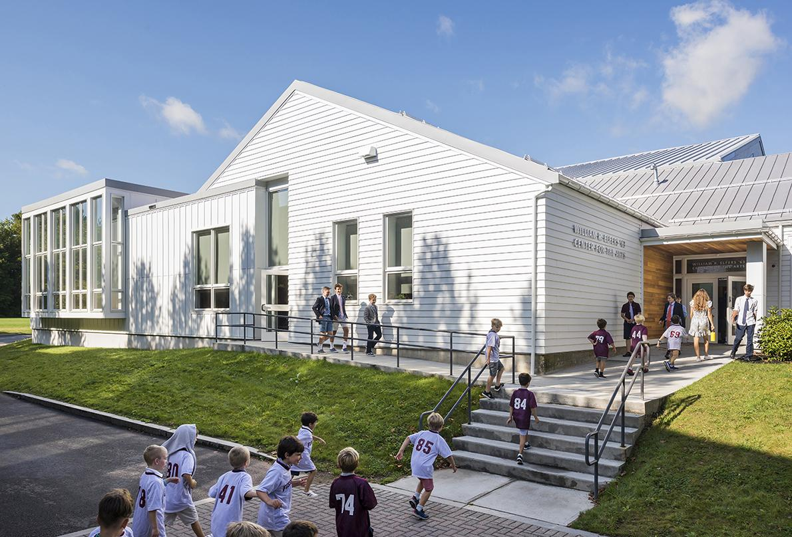

페센든 스쿨(The Fessenden School)은 미국 매사추세츠주 뉴턴(보스턴 근교)에 위치한 명문 주니어 보딩스쿨입니다. 1903년에 설립된 남학생 중심의 전통 있는 학교로, 명문 보딩 고등학교 진학을 준비하는 한국 유학생 가정에서 관심이 높습니다.
학교 특징
페센든은 소규모 학급과 기숙 생활을 통한 밀착 교육으로 잘 알려져 있습니다. 보스턴 근교라는 입지 덕분에 대학·박물관 등 교육 자원이 풍부하며, 영어(ESL) 지원 프로그램도 잘 갖춰져 있어 국제학생이 단계적으로 적응할 수 있습니다. 스포츠·음악·리더십 활동을 통한 전인교육을 강조합니다.
한국 학생들이 페센든에 진학하는 이유
① 명문 보딩 고등학교 진학의 발판 — 졸업생이 미국 동북부 명문 보딩으로 많이 진학합니다. ② 보스턴 근교라 교육 인프라가 우수. ③ 어린 학년부터 영어 환경과 기숙 생활에 적응해 자기주도 학습을 기름. 다만 어린 나이의 유학인 만큼 영어와 학업 기초를 미리 다지는 것이 중요합니다.
왜 1:1 과외가 필요한가요?
· 수학 과외 — 미국 중등 수학은 프리알지브라에서 알지브라·지오메트리로 이어집니다. 용어와 풀이 방식이 한국과 달라, 1:1 수학과외로 개념을 영어 용어와 함께 잡아두면 고등학교 진학 후에도 흔들리지 않습니다.
· 영어 과외 — 리딩과 에세이 라이팅·첨삭이 수업의 중심입니다. 어린 학년일수록 영어과외로 글쓰기 기초와 어휘를 탄탄히 쌓아두면 이후 명문 보딩 진학에 큰 도움이 됩니다.
· 과학 과외 — 과학 과목을 영어로 소화하려면 개념과 영어 용어를 동시에 잡아야 합니다. 1:1 과학과외로 실험 리포트·시험을 함께 관리하면 좋습니다.
입학(Admission) 준비
페센든 입학은 성적과 영어 에세이, 추천서, 인터뷰(면접), SSAT 등이 종합적으로 평가됩니다. 어린 학년의 인터뷰는 영어 유창성보다 태도와 호기심을 보여주는 것이 중요하므로, 1:1로 예상 질문을 연습해 두면 좋은 인상을 줄 수 있습니다.
정리
페센든 스쿨은 명문 보딩 진학의 발판이 되는 보스턴 근교 주니어 보딩스쿨입니다. ① 수학은 기초(알지브라·지오메트리)부터 ② 영어는 리딩·에세이 중심으로 ③ 과학은 개념+영어를 함께 준비하는 것이 핵심입니다. 입학 준비든 재학 내신이든, 30분 무료 상담으로 우리 아이 맞춤 계획을 먼저 세워 보세요. 해외에 있어도 화상 수업으로 동일하게 관리합니다.